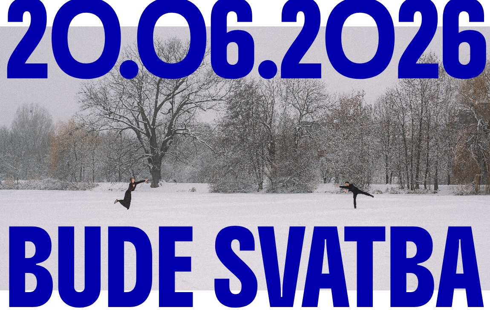
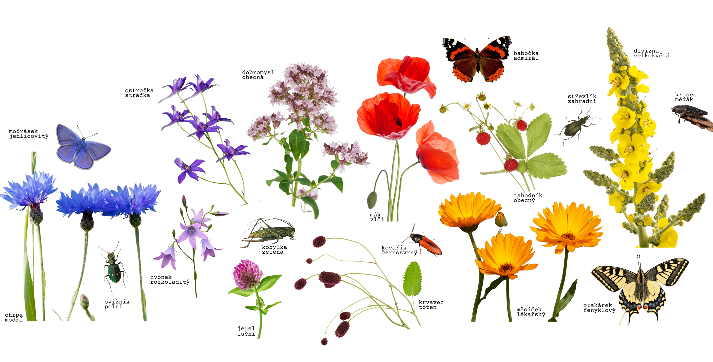

kdo:
pokud jste dostali modrej podtácek nebo jakýkoliv jiný pozvání, jste zvaný!
začátek obřadu:
11:00
kde:
kostel sv. Mikuláše, Petrovice 48, 403 37 Petrovice
co:
obřad
gratulace (pro ty, kteří se účastní jen obřadu)
společná fotografie
drobný občerstvení
parkování:
parkování je možné vedle kostela nebo v obci
v kostele:
kapacita míst k sezení v kostele je omezená, prosíme, respektujte zasedací pořádek pro rodinu a případně přenechte svoje místo někomu staršímu (nebude to moc dlouhý)
během obřadu prosíme nefoťte, na místě bude fotograf - výběr fotografí pro vás bude k dispozici
vzory a barvy:
bez vzoru
proužky
kostičky
můžete se inspirovat barvami červnové louky:

dary:
to, že s náma strávíte náš svatební den, je pro nás dar
pokud nám budete chtít přispět do manželství, budeme rádi za jakýkoliv finanční příspěvek (a nějaký přáníčko:))
číslo bakovního účtu:
3544813011/5500
těšíme se na vás!!
Veru a Tadeáš